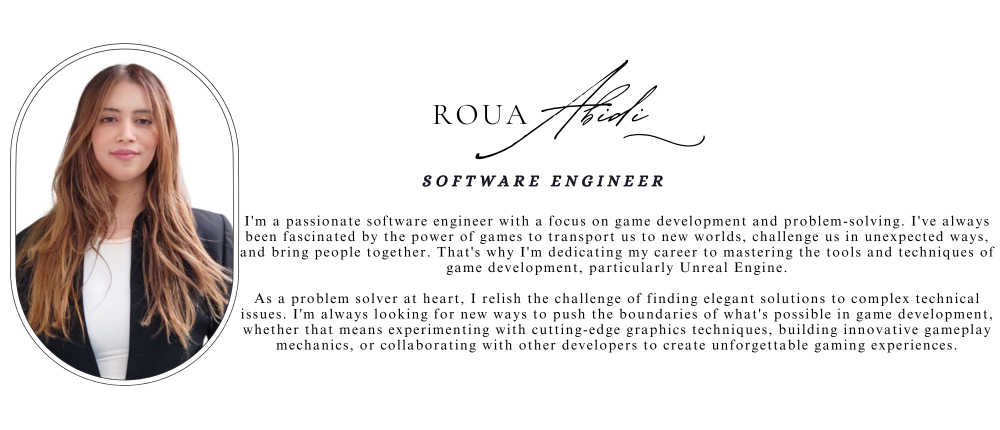

About Me

int main()
{
std::cout << "Dear Guests, ";
string str = "): terces elttil a rof woleb \"gnihtyna\" retnE !yb gnippots rof uoy knahT";
reverse(str.begin(), str.end());
cout << str;
return 0;
}